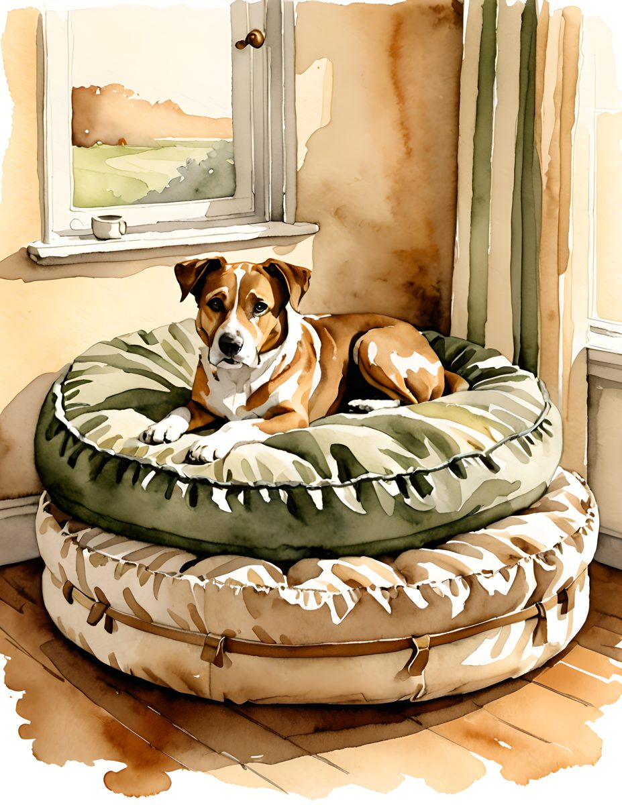

A mixed pet journal can feel cohesive if the pages share warmth, old paper, and soft florals, even when one kit is cat-themed and another is dog-themed.




Give each pet its own section
Use tabs, ribbon, or a repeated label shape so the journal feels organized without becoming stiff.
Use one shared neutral
Antique cream is the bridge. It lets very different animal pages sit together softly.